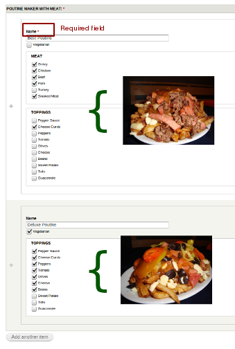

The power of Drupal stems from its willingness to be customized. In a recent project, we needed a way to provide complex fields with custom widgets and formatters unavailable in core or contributed modules. Drupal 7's Field API, however, provides the hooks needed to make just about any field we wanted.
The top two reasons for wanting to make a custom field are:
In this post, I'll start by covering the first item: custom field widgets. But first let's take a look at the main hooks I'll cover in this series.
hook_field_info() tells Drupal about your custom fields.hook_field_widget_info() tells Drupal about your custom field widgets.hook_field_widget_form() tells Drupal the structure of your custom field widget, so that a form can be displayed to the user.hook_field_is_empty() tells Drupal how to tell whether or not the user has entered any data worth saving.hook_field_validate() tells Drupal about any errors detected in the submitted data.hook_field_formatter_info() tells Drupal about your custom field formatters.hook_field_formatter_view() tells Drupal how to display the data in your field to the user.Those who don't live in Canada may not be familiar with the best thing Montreal has to offer: poutine. Poutine is the delicious but harmful combination of French fries, cheese curds, and copious amounts of gravy. Those who live outside Quebec may not even be aware of the stuff Montrealers put in their poutine: I've seen anything from lobster to smoked meat to avocado in poutine.
With the recent startup craze, I figured I'd hop on the bandwagon and start my own company called Poutine.ly. On my company's Drupal 7 site, I wanted to let my hired bloggers blog about new poutine creations my chefs concocted. What I needed was a custom field.
And poutine_maker.module was born.
hook_field_info()First you need to tell Drupal that you are defining your own field type. You can also define new widgets and formatters for existing field types, but in this example we want to store a Poutine creation, which is not an existing field type.
Here is how you define a field type:
function poutine_maker_field_info() {
return array(
'poutine_maker_poutine' => array(
'label' => t('Custom Poutine'),
'description' => t('Custom Poutine Field'),
'default_widget' => 'poutine_maker_poutine_widget',
'default_formatter' => 'poutine_maker_poutine_formatter',
),
);
}
poutine_maker_poutine is the machine-readable name of the field. The convention is to name it in the form <modulename>_<fieldname>. In this example, poutine_maker is the module name and poutine is the field name.
Pay close attention to the default_widget and default_formatter values. We will use these machine-readable widget and formatter names throughout the module.
hook_field_widget_info()Next we need to tell Drupal about your custom widget. This will allow Drupal to display your field on the Manage Fields tab of a fieldable entity (e.g. a Basic Page) like this:
Here's the code:
function poutine_maker_field_widget_info() {
return array(
'poutine_maker_poutine_widget' => array(
'label' => t('Default'),
'field types' => array('poutine_maker_poutine'),
),
);
}
Remember poutine_maker_poutine_widget? That's the full machine-readable widget name. The convention is <modulename>_<fieldname>_<widgetname>. In this case, I've named my widget widget; I only intend to make one widget for this field, and I don't have a good way to describe it. However, if you can describe your widget, do so: poutine_maker_poutine_threetext would be a good name for my widget if it consisted of three text fields.
Also note that I am specifically telling Drupal that my widget can work with the poutine_maker_poutine field type. Here is where you could specify other field types your widget works with, like text or datetime.
hook_field_widget_form()This is the form element I want customers to use to create custom poutines:

There are three important things to notice about this screenshot:
I implemented the widget shown in the above screenshot by implementing hook_field_widget_form(). Let's take a look at the function signature of my implementation, poutine_maker_field_widget_form():
function poutine_maker_field_widget_form(&$form,
&$form_state,
$field,
$instance,
$langcode,
$items,
$delta,
$element)
There are a lot of parameters that are covered in the documentation, so I'll just cover the important ones:
$items stores the data entered by the user. It is an array of $item arrays, keyed by each item's $delta. If you have a multi-value field instance, there will be more than one item; if your field instance has just one value, then there will be one item with the key 0.$element is the value this function will return. It uses the Form API's form definition structure, so it will probably look familiar to you. It is passed to poutine_maker_field_widget_form() with some existing values documented here, so make sure you don't overwrite it.For my poutine field, I want a bunch of sub-elements for name, toppings, etc., so I will make $element a fieldset:
$element += array(
'#type' => 'fieldset',
);
Next, I want to add a name field so customers can name their poutine creations:
$item =& $items[$delta];
$element['name'] = array(
'#title' => t('Name'),
'#type' => 'textfield',
'#required' => $required,
// use #default_value to prepopulate the element
// with the current saved value
'#default_value' => isset($item['name']) ? $item['name'] : '',
);
All of these keys should look familiar if you've used the Form API before (see the reference if they don't). Just note that we're using $item to set the default value. Since $item is just the data stored by the form, this pre-fills the element with whatever the current value is -- if one has been set. Drupal will automatically map the value of $element['name'] to $item['name'], but this isn't always the case, as we'll see when we create nested fieldsets.
Here is a checkbox for informing the chef that you are vegetarian:
$element['vegetarian'] = array(
'#title' => t('Vegetarian'),
'#type' => 'checkbox',
'#default_value' => isset($item['vegetarian']) ? $item['vegetarian'] : '',
);
Poutine puritans will be horrified (and others may just feel a trembling in their arteries), but here is a fieldset with a few meats to choose from:
$process = array_merge($fieldset_info['#process'], array('poutine_maker_ignore_parent'));
$element['meat'] = array(
'#title' => t('Meat'),
'#type' => 'fieldset',
'#process' => $process,
);
// Create a checkbox item for each meat on the menu
// poutine_maker_toppings_meat() returns an associative array of all the meats I want available
// It is in a separate file that I have not included in this tutorial
foreach (poutine_maker_toppings_meat() as $meat_machine=>$meat) {
$element['meat'][$meat_machine] = array(
'#title' => t($meat),
'#type' => 'checkbox',
'#default_value' => isset($item[$meat_machine]) ? $item[$meat_machine] : '',
);
}
You'll notice that I added a #process key to the fieldset. This is because the 'meat' fieldset is nested within another fieldset (the $element fieldset). Drupal doesn't know automatically how to map $form values to $item values when they are within fieldsets, so I've added a #process callback to fix this. I will explain this in greater detail later.
In the full version of the poutine_maker example module I wrote for this post, I also include a $element['toppings'] the same way, which is a separate fieldset for non-meat toppings.
hook_field_is_empty()hook_field_is_empty() lets Drupal know whether or not to bother saving or validating submitted values. In the following example, I first check to see if any of the checkboxes have been checked off, and then check to see if they have entered a name. If any of these conditions are satisfied, I consider the field non-empty (though not necessarily full).
function poutine_maker_field_is_empty($item, $field) {
$has_stuff = FALSE;
// first see if any of the topping checkboxes have been checked off
foreach (poutine_maker_toppings() as $topping_machine=>$topping) {
if (isset($item[$topping_machine]) && $item[$topping_machine] == 1) {
$has_stuff = TRUE;
}
}
// has the user checked off the 'vegetarian' checkbox?
if (isset($item['vegetarian']) && $item['vegetarian'] == 1) {
$has_stuff = TRUE;
}
// has the user entered a name?
if (!empty($item['name'])) {
$has_stuff = TRUE;
}
return !$has_stuff;
}
This hook is easy to get wrong. If poutine_maker_field_is_empty() ever returns true when it should be false, the entered values will just be ignored. You are no doubt smarter than me, but if you ever notice that your values aren't saving, check your hook_field_is_empty() implementation.
hook_field_schema()hook_field_schema() defines table columns specifically for saving your field values. Whereas hook_schema() will define a table and its fields, hook_field_schema() will only need to define its columns, since the Field API will make a table for each field instance of a custom field. If you aren't already familiar with the Schema API, you can learn more about it here.
In poutine_maker.install:
function poutine_maker_field_schema($field) {
// include poutine_maker.toppings.inc for poutine_maker_toppings()
module_load_include('inc', 'poutine_maker', 'poutine_maker.toppings');
$columns = array(
'name' => array('type' => 'varchar', 'length' => 255, 'not null' => TRUE),
'vegetarian' => array('type' => 'int', 'length' => 1, 'not null' => FALSE),
);
// poutine_maker_toppings() returns all the toppings;
// make a column for each topping
foreach (poutine_maker_toppings() as $topping_machine=>$topping) {
$columns[$topping_machine] = array(
'type' => 'int',
'length' => 1,
'not null' => FALSE,
);
}
return array(
'columns' => $columns,
'indexes' => array(),
);
}
Each sub-element we defined in hook_widget_form() has a column in this table. Notice that there is nothing that resembles a fieldset. This should not surprise you if you have used databases before, but it is useful to know why we need to use a special #process callback to 'flatten' the form values.
I like to test custom fields by attaching my field to a simple node like a Basic Page (Structure -> Content Types -> Basic Page -> Manage Fields).
Once you click "Save", it will ask you to configure your field:

Now when I add a new Basic Page (Content -> Add content -> Basic Page), my field is attached to the form (this time I have set number of items to 1):

I promised to explain the #process trick I used. Here's where I tell the Form API about my process callback:
$process = array_merge($fieldset_info['#process'], array('poutine_maker_ignore_parent'));
$element['meat'] = array(
'#title' => t('Meat'),
'#type' => 'fieldset',
'#process' => $process,
);
The array_merge is just to preserve the current #process callbacks. Here is the callback itself:
function poutine_maker_ignore_parent(&$form, &$form_state, $complete) {
array_pop($form['#parents']);
return $form;
}
What does this do? Before I answer this question, let's take a look at a few keys of $form. In this case, $form is the 'meat' fieldset, to which we added the #process callback:
$form = array(
...
'#array_parents' => array('field_poutine_meat', 'und', 0, 'meat'),
'#parents' => array('field_poutine_meat', 'und', 0, 'meat'),
...
);
#parents and #array_parents are identical, except in how they are used. #array_parents is for internal use, and shouldn't be touched. #parents, on the other hand, is the array that the Field API uses to determine the structure of $items, which it uses to save the values in the database.
Our #process callback removes the last value from the #parents array. That's 'meat', which is the name of the fieldset (the same key we used in $element). If we remove that key from #parents, then all the elements under $element['meat'] will be saved into $item, not $item['meat'] (e.g. $element['meat']['chicken'] would be saved into $item['chicken'] instead of $item['meat']['chicken']). This will ensure that the values of the meat checkboxes will be saved properly into the database.
To create your own custom field:
hook_field_info().hook_field_widget_info().hook_field_widget_form().Next I will cover validation and formatting of custom fields. This is what you need to do to make sure your field stores only valid data, and to display the stored data in a useful fashion.
See poutine_maker on GitHub for a full example. And, as always, let me know if you have questions and I'll try my best to answer them. Even if you don't have questions, let us know what you're using custom fields for!